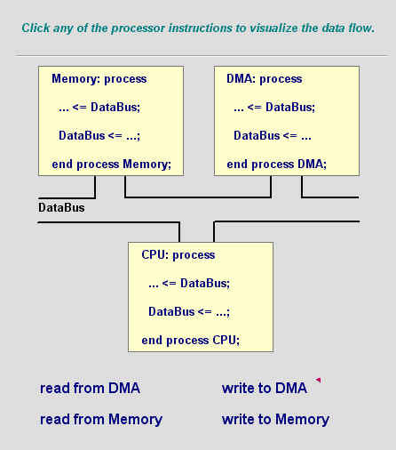

Может ли сигнал иметь два драйвера?

Когда сигнал имеет только один драйвер, его значение просто определить. Однако, что случается, когда сигнал имеет множество драйверов? Какие значения сигнала такие драйверы сгенерируют?
Сигналы с многократными источниками могут быть найдены в многочисленных приложениях. Например, компьютерный автобус данных может получать данные от процессора, памяти, дисков и устройств ввода - вывода. Каждое из тех устройств управляет шиной, и каждая линия сигнала шины может иметь множество драйверов. С тех пор как VHDL это язык для описания цифровых систем, такое множество драйверов обрабатываются в VHDL с легкостью.
Трудно определить заранее, будет ли "много - исходный" сигнал всегда управляться только источником сигнала. В некоторых системах это будет всегда истинно, в то время как в других это может быть даже желательно к смешанным сигналам из различных источников, эмулируя например операции " И " или " ИЛИ ". Вообще, много - исходные сигналы требуют установления метода для определения результирующего значения, когда несколько источников одновременно питают ту же самую линия сигнала.
|